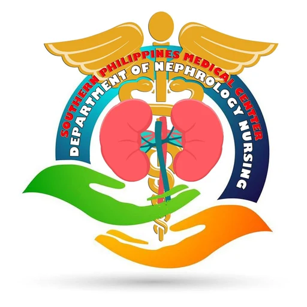
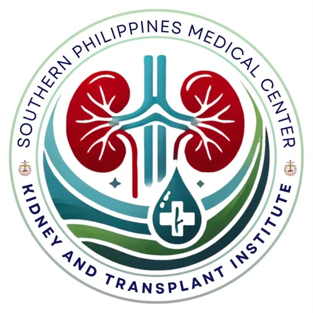

Southern Philippines Medical Center
Honor the nurses who keep our patients well.
Nominate a colleague for an award of the Nephrology Nursing Cluster. Nurses and dialysis technicians of Main, Annex, SKTI, OTSU, SHARE, and Nurse Navigators are eligible.


How to nominate, in under a minute
Choose an award, name your colleague, and send it.
How to nominate
Three steps. Each nomination needs one staff name and a short reason.
-
Choose an award
Open the award that fits the work you saw. Each award page shows its coverage and what the committee looks for.
-
Name your colleague
Type your name, pick the nominee from the staff list, and write a short reason with one or two examples.
-
Send it
Press Send nomination. The nominee appears on the award page, and you can nominate for another award the same way.
You cannot nominate yourself. One name nominates once per award.